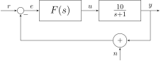
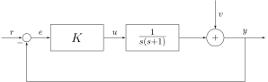
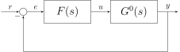

%env PATH=$PATH:/Library/TeX/texbin/:/opt/homebrew/Caskroom/miniforge/base/envs/book/bin/
env: PATH=$PATH:/Library/TeX/texbin/:/opt/homebrew/Caskroom/miniforge/base/envs/book/bin/
%load_ext jupyter_tikz
%%tikz -l positioning,calc,arrows --save-image=ex0-block.svg
\begin{tikzpicture}[auto, node distance=2cm,>=latex']
\tikzstyle{block} = [draw, fill=white, rectangle, minimum height=3em, minimum width=6em]
\tikzstyle{sum} = [draw, fill=white, circle, node distance=1cm]
\tikzstyle{input} = [coordinate]
\tikzstyle{output} = [coordinate]
% Nodes
\node [input, name=input] {};
\node [sum, right of=input] (sum) {};
\node [block, right of=sum] (controller) { \Large $F(s)$};
\node [block, right of=controller, node distance=3cm] (system) {\Large $\frac{10}{s+1}$};
% Disturbance Nodes
\node [sum, below of=system, node distance=1.5cm] (sum2) {$+$};
\node [input, below of=sum2, node distance=1cm] (v_in) {};
% Output Node
\node [output, right of=system, node distance=2cm] (output) {};
% Connections
\draw [->] (input) -- node {$r$} (sum);
\draw [->] (sum) -- node {$e$} (controller);
\draw [->] (controller) -- node {$u$} (system);
% Disturbance path
\draw [->] (v_in) -- node[midway, left] {$n$} (sum2);
% Final output and feedback
\draw [->] (system) -- node [name=y] {$y$} (output);
\draw [->] (y) |- (sum2);
\draw [->] (sum2) -| node[pos=0.99, right] {$-$} (sum);
\end{tikzpicture}

%%tikz -l positioning,calc,arrows --save-image=ex1-block.svg
\begin{tikzpicture}[auto, node distance=2cm,>=latex']
\tikzstyle{block} = [draw, fill=white, rectangle, minimum height=3em, minimum width=6em]
\tikzstyle{sum} = [draw, fill=white, circle, node distance=1cm]
\tikzstyle{input} = [coordinate]
\tikzstyle{output} = [coordinate]
% Nodes
\node [input, name=input] {};
\node [sum, right of=input] (sum) {};
\node [block, right of=sum] (controller) { \Large $K$};
\node [block, right of=controller, node distance=3cm] (system) {\Large $\frac{1}{s(s+1)}$};
% Disturbance Nodes
\node [sum, right of=system, node distance=2.5cm] (sum2) {$+$};
\node [input, above of=sum2, node distance=1.5cm] (v_in) {};
% Output Node
\node [output, right of=sum2, node distance=2cm] (output) {};
% Connections
\draw [->] (input) -- node {$r$} (sum);
\draw [->] (sum) -- node {$e$} (controller);
\draw [->] (controller) -- node {$u$} (system);
\draw [->] (system) -- (sum2);
% Disturbance path
\draw [->] (v_in) -- node {$v$} (sum2);
% Final output and feedback
\draw [->] (sum2) -- node [name=y] {$y$} (output);
\draw [->] (y) |- ++(0,-2) -| node[pos=0.99] {$-$} (sum);
\end{tikzpicture}

%%tikz -l positioning,calc,arrows --save-image=ex2-block.svg
\begin{tikzpicture}[auto, node distance=2cm,>=latex']
\tikzstyle{block} = [draw, fill=white, rectangle, minimum height=3em, minimum width=6em]
\tikzstyle{sum} = [draw, fill=white, circle, node distance=1cm]
\tikzstyle{input} = [coordinate]
\tikzstyle{output} = [coordinate]
\tikzstyle{pinstyle} = [pin edge={to-,thin,black}]
\node [input, name=input] {};
\node [sum, right of=input] (sum) {};
\node [block, right of=sum] (controller) { \Large $F(s)$};
\node [block, right of=controller, node distance=3cm] (system) {\Large $G^0(s)$};
\draw [->] (controller) -- node[name=u] {$u$} (system);
\node [output, right of=system] (output) {};
\coordinate [below of=u] (measurements);
\draw [draw,->] (input) -- node {$r$} (sum);
\draw [->] (sum) -- node {$e$} (controller);
\draw [->] (system) -- node [name=y] {$y$}(output);
\draw [->] (y) |- (measurements) -| node[pos=0.99] {$-$} (sum);
\end{tikzpicture}

%%tikz -l positioning,calc,arrows --save-image=ex3-sign.svg
\begin{tikzpicture}
\usetikzlibrary{positioning}
% column positions
\def\x{-3,-1,1,3}
% vertical delimiters
\foreach \x/\lab in {
-3/{},
-1/{-1},
1/{0},
3/{3}
}{
\draw (\x,1.2) -- (\x,-2.2);
\node[above] at (\x,1.2) {$\lab$};
}
% row labels
\node[left] at (-4,0.3) {Numerator};
\node[left] at (-4,-0.4) {Denominator};
\node[left] at (-4,-1.5) {Sign};
% numerator signs
\node at (-2,0.3) {$+$};
\node at (0,0.3) {$+$};
\node at (2,0.3) {$-$};
\node at (4,0.3) {$+$};
% denominator signs
\node at (-2,-0.4) {$-$};
\node at (0,-0.4) {$+$};
\node at (2,-0.4) {$+$};
\node at (4,-0.4) {$+$};
% horizontal separator
\draw (-3.5,-0.9) -- (4.5,-0.9);
% total sign
\node at (-2,-1.5) {$-$};
\node at (0,-1.5) {$+$};
\node at (2,-1.5) {$-$};
\node at (4,-1.5) {$+$};
\end{tikzpicture}